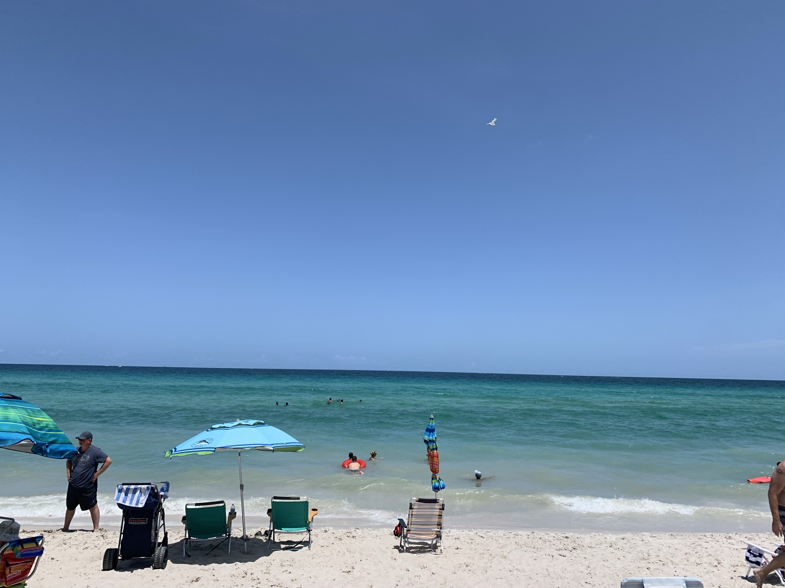

Miami, officially the City of Miami, is a coastal metropolis located in Miami-Dade County in southeastern Florida, United States. It is the forty second largest city in the United States. Miami, however, is one of the core cities in a metropolitan area which is the third most populous metropolis on the East coast of the United States, and it is the seventh largest in the US.[12][13] The city has the third largest skyline in the U.S. with over 300 high-rises,[14] 55 of which exceed 491 ft (150 m).[15]
Miami is a major center and leader in finance, commerce, culture, arts, and international trade.[16][17] The metro area is by far the largest urban economy in Florida and the 12th largest in the United States, with a GDP of $344.9 billion as of 2017.[18] In 2020, Miami was classified as a Beta + level global city by the GaWC.[19] In 2019, Miami ranked seventh in the United States and 31st among global cities in business activity, human capital, information exchange, cultural experience, and political engagement.[20] According to a 2018 UBS study of 77 world cities, the city was ranked as the third-richest in the world and the second-richest in the United States in purchasing power.[21] Miami is nicknamed the "Capital of Latin America" and is one of the largest majority-minority cities in the United States with over 72.7% of the population being of Hispanic and Latino descent.[7]
by Wikipedia